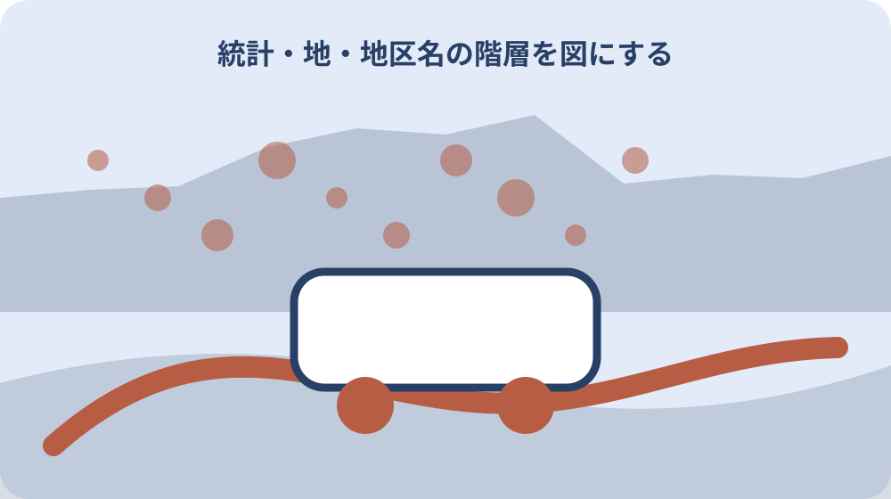

先に結論を確認する
この記事の答え：別PDFとして公開されています。名称と集計単位を確認して対応表を作ります。
森町で最初に照合する条件：自宅住所、町名、行政区、地区の四欄を作り公式表の見出しどおりに転記する
自宅住所を公式表の行へ対応させる
自宅住所を公式表の行へ対応させるに関して、森町の月別人口ページは、基準日を示したうえで総人口、男性人口、女性人口、世帯数をそれぞれ掲載している。自宅住所を公式表の行へ対応させるを確認する際、自宅住所を公式表の行へ対応させるときは、公式資料の表記をそのまま控え、似た名称や数字を家族の記憶だけで同一と決めません。自宅住所を公式表の行へ対応させるの記録では、資料名と確認日も添えると、後日の更新と区別できます。
自宅住所を公式表の行へ対応させるを確認する際、森町公式ページでは町名別人口と行政区別人口が別PDFで公開され、二つの区分を同じ表として扱っていない。自宅住所を公式表の行へ対応させるの記録では、この情報を自宅住所を公式表の行へ対応させる資料へ移す場合は、対象、日付、場所、名義など本文で確認できる項目だけを書きます。自宅住所を公式表の行へ対応させるを家族へ伝える前に、分からない欄は空白で消さず、確認先を付けた未確認欄として残します。
自宅住所を公式表の行へ対応させるの記録では、森町へ自宅住所を公式表の行へ対応させる内容を尋ねる前に、手元の資料で一致した点と一致しない点を二列にします。自宅住所を公式表の行へ対応させるを家族へ伝える前に、「森町の月別人口ページは、基準日を示したうえで総人口、男性人口、女性人口、世帯数をそれぞれ掲載している」という案内のどこを読んだかを示せば、今回の対象に合う回答を得やすくなります。
自宅住所を公式表の行へ対応させるを家族へ伝える前に、自宅住所を公式表の行へ対応させる結果には、回答日、担当窓口、参照資料、次に必要な行動を記録します。自宅住所を公式表の行へ対応させるの見直しでは、本人の意思や家族の予定は公的事実と別欄に置き、町の案内のように見える書き方を避けます。
自宅住所を公式表の行へ対応させるの見直しでは、自宅住所を公式表の行へ対応させる記録を家族へ渡す際は、採用した資料だけでなく未確認事項も共有します。自宅住所を公式表の行へ対応させるに関して、森町公式ページでは町名別人口と行政区別人口が別PDFで公開され、二つの区分を同じ表として扱っていないという条件が変わった場合も、どの行から見直せばよいか判断できます。
町名別と行政区別を横並びにする
町名別と行政区別を横並びにするに関して、森町の月別人口ページには、総人口と世帯数をまとめた「森町人口統計表」のPDFが掲載されている。町名別と行政区別を横並びにするを確認する際、町名別と行政区別を横並びにするときは、公式資料の表記をそのまま控え、似た名称や数字を家族の記憶だけで同一と決めません。町名別と行政区別を横並びにするの記録では、資料名と確認日も添えると、後日の更新と区別できます。
町名別と行政区別を横並びにするを確認する際、森町の月別人口ページでは人口と世帯数が異なる項目として掲載され、一つの数値へまとめられていない。町名別と行政区別を横並びにするの記録では、この情報を町名別と行政区別を横並びにする資料へ移す場合は、対象、日付、場所、名義など本文で確認できる項目だけを書きます。町名別と行政区別を横並びにするを家族へ伝える前に、分からない欄は空白で消さず、確認先を付けた未確認欄として残します。
町名別と行政区別を横並びにするの記録では、森町へ町名別と行政区別を横並びにする内容を尋ねる前に、手元の資料で一致した点と一致しない点を二列にします。町名別と行政区別を横並びにするを家族へ伝える前に、「森町の月別人口ページには、総人口と世帯数をまとめた「森町人口統計表」のPDFが掲載されている」という案内のどこを読んだかを示せば、今回の対象に合う回答を得やすくなります。
基準日を表題と一緒に写す
基準日を表題と一緒に写すに関して、森町の月別人口ページは、各年齢の人数を確認できる「1歳単位人口」のPDFを人口統計表とは別に掲載している。基準日を表題と一緒に写すを確認する際、基準日を表題と一緒に写すときは、公式資料の表記をそのまま控え、似た名称や数字を家族の記憶だけで同一と決めません。基準日を表題と一緒に写すの記録では、資料名と確認日も添えると、後日の更新と区別できます。
基準日を表題と一緒に写すを確認する際、森町が公開する月別の人口資料には基準日が付され、異なる月の表は基準日を区別して読む構成になっている。基準日を表題と一緒に写すの記録では、この情報を基準日を表題と一緒に写す資料へ移す場合は、対象、日付、場所、名義など本文で確認できる項目だけを書きます。基準日を表題と一緒に写すを家族へ伝える前に、分からない欄は空白で消さず、確認先を付けた未確認欄として残します。
基準日を表題と一緒に写すの記録では、森町へ基準日を表題と一緒に写す内容を尋ねる前に、手元の資料で一致した点と一致しない点を二列にします。基準日を表題と一緒に写すを家族へ伝える前に、「森町の月別人口ページは、各年齢の人数を確認できる「1歳単位人口」のPDFを人口統計表とは別に掲載している」という案内のどこを読んだかを示せば、今回の対象に合う回答を得やすくなります。

人口と世帯数を別列で読む
人口と世帯数を別列で読むに関して、森町の月別人口ページは、町名ごとの人数を示す「町名別人口」のPDFを独立した資料として掲載している。人口と世帯数を別列で読むを確認する際、人口と世帯数を別列で読むときは、公式資料の表記をそのまま控え、似た名称や数字を家族の記憶だけで同一と決めません。人口と世帯数を別列で読むの記録では、資料名と確認日も添えると、後日の更新と区別できます。
人口と世帯数を別列で読むを確認する際、森町の令和4年度版統計は、人口に関する資料の中で町内会別人口を独立した表として掲載している。人口と世帯数を別列で読むの記録では、この情報を人口と世帯数を別列で読む資料へ移す場合は、対象、日付、場所、名義など本文で確認できる項目だけを書きます。人口と世帯数を別列で読むを家族へ伝える前に、分からない欄は空白で消さず、確認先を付けた未確認欄として残します。
人口と世帯数を別列で読むの記録では、森町へ人口と世帯数を別列で読む内容を尋ねる前に、手元の資料で一致した点と一致しない点を二列にします。人口と世帯数を別列で読むを家族へ伝える前に、「森町の月別人口ページは、町名ごとの人数を示す「町名別人口」のPDFを独立した資料として掲載している」という案内のどこを読んだかを示せば、今回の対象に合う回答を得やすくなります。
地区名の階層を図にする
地区名の階層を図にするに関して、森町の月別人口ページは、行政区ごとの人数を示す「行政区別人口」のPDFを町名別資料とは別に掲載している。地区名の階層を図にするを確認する際、地区名の階層を図にするときは、公式資料の表記をそのまま控え、似た名称や数字を家族の記憶だけで同一と決めません。地区名の階層を図にするの記録では、資料名と確認日も添えると、後日の更新と区別できます。
地区名の階層を図にするを確認する際、森町の令和4年度版統計は、町内会別人口とは別に地区別人口を確認できる表を掲載している。地区名の階層を図にするの記録では、この情報を地区名の階層を図にする資料へ移す場合は、対象、日付、場所、名義など本文で確認できる項目だけを書きます。地区名の階層を図にするを家族へ伝える前に、分からない欄は空白で消さず、確認先を付けた未確認欄として残します。
地区名の階層を図にするの記録では、森町へ地区名の階層を図にする内容を尋ねる前に、手元の資料で一致した点と一致しない点を二列にします。地区名の階層を図にするを家族へ伝える前に、「森町の月別人口ページは、行政区ごとの人数を示す「行政区別人口」のPDFを町名別資料とは別に掲載している」という案内のどこを読んだかを示せば、今回の対象に合う回答を得やすくなります。
PDFの注記と空欄を読む
PDFの注記と空欄を読むに関して、森町公式ページでは町名別人口と行政区別人口が別PDFで公開され、二つの区分を同じ表として扱っていない。PDFの注記と空欄を読むを確認する際、PDFの注記と空欄を読むときは、公式資料の表記をそのまま控え、似た名称や数字を家族の記憶だけで同一と決めません。PDFの注記と空欄を読むの記録では、資料名と確認日も添えると、後日の更新と区別できます。
PDFの注記と空欄を読むを確認する際、森町の令和4年度版統計では、外国人人口と人口動態が人口分野の別項目として整理されている。PDFの注記と空欄を読むの記録では、この情報をPDFの注記と空欄を読む資料へ移す場合は、対象、日付、場所、名義など本文で確認できる項目だけを書きます。PDFの注記と空欄を読むを家族へ伝える前に、分からない欄は空白で消さず、確認先を付けた未確認欄として残します。
PDFの注記と空欄を読むの記録では、森町へPDFの注記と空欄を読む内容を尋ねる前に、手元の資料で一致した点と一致しない点を二列にします。PDFの注記と空欄を読むを家族へ伝える前に、「森町公式ページでは町名別人口と行政区別人口が別PDFで公開され、二つの区分を同じ表として扱っていない」という案内のどこを読んだかを示せば、今回の対象に合う回答を得やすくなります。
年度版統計と月別表を分ける
年度版統計と月別表を分けるに関して、森町の月別人口ページでは人口と世帯数が異なる項目として掲載され、一つの数値へまとめられていない。年度版統計と月別表を分けるを確認する際、年度版統計と月別表を分けるときは、公式資料の表記をそのまま控え、似た名称や数字を家族の記憶だけで同一と決めません。年度版統計と月別表を分けるの記録では、資料名と確認日も添えると、後日の更新と区別できます。
年度版統計と月別表を分けるを確認する際、e-Statの住民基本台帳人口移動報告月報は全国・都道府県・21大都市を扱い、森町の行政区別人口表とは地域単位が異なる。年度版統計と月別表を分けるの記録では、この情報を年度版統計と月別表を分ける資料へ移す場合は、対象、日付、場所、名義など本文で確認できる項目だけを書きます。年度版統計と月別表を分けるを家族へ伝える前に、分からない欄は空白で消さず、確認先を付けた未確認欄として残します。
年度版統計と月別表を分けるの記録では、森町へ年度版統計と月別表を分ける内容を尋ねる前に、手元の資料で一致した点と一致しない点を二列にします。年度版統計と月別表を分けるを家族へ伝える前に、「森町の月別人口ページでは人口と世帯数が異なる項目として掲載され、一つの数値へまとめられていない」という案内のどこを読んだかを示せば、今回の対象に合う回答を得やすくなります。
外国人人口の欄を別に確認する
外国人人口の欄を別に確認するに関して、森町が公開する月別の人口資料には基準日が付され、異なる月の表は基準日を区別して読む構成になっている。外国人人口の欄を別に確認するを確認する際、外国人人口の欄を別に確認するときは、公式資料の表記をそのまま控え、似た名称や数字を家族の記憶だけで同一と決めません。外国人人口の欄を別に確認するの記録では、資料名と確認日も添えると、後日の更新と区別できます。
外国人人口の欄を別に確認するを確認する際、森町の月別人口ページは、基準日を示したうえで総人口、男性人口、女性人口、世帯数をそれぞれ掲載している。外国人人口の欄を別に確認するの記録では、この情報を外国人人口の欄を別に確認する資料へ移す場合は、対象、日付、場所、名義など本文で確認できる項目だけを書きます。外国人人口の欄を別に確認するを家族へ伝える前に、分からない欄は空白で消さず、確認先を付けた未確認欄として残します。
外国人人口の欄を別に確認するの記録では、森町へ外国人人口の欄を別に確認する内容を尋ねる前に、手元の資料で一致した点と一致しない点を二列にします。外国人人口の欄を別に確認するを家族へ伝える前に、「森町が公開する月別の人口資料には基準日が付され、異なる月の表は基準日を区別して読む構成になっている」という案内のどこを読んだかを示せば、今回の対象に合う回答を得やすくなります。
家族の転居日と表の基準日を照合する
家族の転居日と表の基準日を照合するに関して、森町の令和4年度版統計は、人口に関する資料の中で町内会別人口を独立した表として掲載している。家族の転居日と表の基準日を照合するを確認する際、家族の転居日と表の基準日を照合するときは、公式資料の表記をそのまま控え、似た名称や数字を家族の記憶だけで同一と決めません。家族の転居日と表の基準日を照合するの記録では、資料名と確認日も添えると、後日の更新と区別できます。
家族の転居日と表の基準日を照合するを確認する際、森町の月別人口ページには、総人口と世帯数をまとめた「森町人口統計表」のPDFが掲載されている。家族の転居日と表の基準日を照合するの記録では、この情報を家族の転居日と表の基準日を照合する資料へ移す場合は、対象、日付、場所、名義など本文で確認できる項目だけを書きます。家族の転居日と表の基準日を照合するを家族へ伝える前に、分からない欄は空白で消さず、確認先を付けた未確認欄として残します。
家族の転居日と表の基準日を照合するの記録では、森町へ家族の転居日と表の基準日を照合する内容を尋ねる前に、手元の資料で一致した点と一致しない点を二列にします。家族の転居日と表の基準日を照合するを家族へ伝える前に、「森町の令和4年度版統計は、人口に関する資料の中で町内会別人口を独立した表として掲載している」という案内のどこを読んだかを示せば、今回の対象に合う回答を得やすくなります。
国統計との粒度差を残す
国統計との粒度差を残すに関して、森町の令和4年度版統計は、町内会別人口とは別に地区別人口を確認できる表を掲載している。国統計との粒度差を残すを確認する際、国統計との粒度差を残すときは、公式資料の表記をそのまま控え、似た名称や数字を家族の記憶だけで同一と決めません。国統計との粒度差を残すの記録では、資料名と確認日も添えると、後日の更新と区別できます。
国統計との粒度差を残すを確認する際、森町の月別人口ページは、各年齢の人数を確認できる「1歳単位人口」のPDFを人口統計表とは別に掲載している。国統計との粒度差を残すの記録では、この情報を国統計との粒度差を残す資料へ移す場合は、対象、日付、場所、名義など本文で確認できる項目だけを書きます。国統計との粒度差を残すを家族へ伝える前に、分からない欄は空白で消さず、確認先を付けた未確認欄として残します。
国統計との粒度差を残すの記録では、森町へ国統計との粒度差を残す内容を尋ねる前に、手元の資料で一致した点と一致しない点を二列にします。国統計との粒度差を残すを家族へ伝える前に、「森町の令和4年度版統計は、町内会別人口とは別に地区別人口を確認できる表を掲載している」という案内のどこを読んだかを示せば、今回の対象に合う回答を得やすくなります。
大石の視点：人口表を物件評価へ直結させない
大石の視点：人口表を物件評価へ直結させないに関して、森町の令和4年度版統計では、外国人人口と人口動態が人口分野の別項目として整理されている。大石の視点：人口表を物件評価へ直結させないを確認する際、大石の視点：人口表を物件評価へ直結させないときは、公式資料の表記をそのまま控え、似た名称や数字を家族の記憶だけで同一と決めません。大石の視点：人口表を物件評価へ直結させないの記録では、資料名と確認日も添えると、後日の更新と区別できます。
大石の視点：人口表を物件評価へ直結させないを確認する際、森町の月別人口ページは、町名ごとの人数を示す「町名別人口」のPDFを独立した資料として掲載している。大石の視点：人口表を物件評価へ直結させないの記録では、この情報を大石の視点：人口表を物件評価へ直結させない資料へ移す場合は、対象、日付、場所、名義など本文で確認できる項目だけを書きます。大石の視点：人口表を物件評価へ直結させないを家族へ伝える前に、分からない欄は空白で消さず、確認先を付けた未確認欄として残します。
大石の視点：人口表を物件評価へ直結させないの記録では、森町へ大石の視点：人口表を物件評価へ直結させない内容を尋ねる前に、手元の資料で一致した点と一致しない点を二列にします。大石の視点：人口表を物件評価へ直結させないを家族へ伝える前に、「森町の令和4年度版統計では、外国人人口と人口動態が人口分野の別項目として整理されている」という案内のどこを読んだかを示せば、今回の対象に合う回答を得やすくなります。
次回更新時に対応表を再点検する
次回更新時に対応表を再点検するに関して、e-Statの住民基本台帳人口移動報告月報は全国・都道府県・21大都市を扱い、森町の行政区別人口表とは地域単位が異なる。次回更新時に対応表を再点検するを確認する際、次回更新時に対応表を再点検するときは、公式資料の表記をそのまま控え、似た名称や数字を家族の記憶だけで同一と決めません。次回更新時に対応表を再点検するの記録では、資料名と確認日も添えると、後日の更新と区別できます。
次回更新時に対応表を再点検するを確認する際、森町の月別人口ページは、行政区ごとの人数を示す「行政区別人口」のPDFを町名別資料とは別に掲載している。次回更新時に対応表を再点検するの記録では、この情報を次回更新時に対応表を再点検する資料へ移す場合は、対象、日付、場所、名義など本文で確認できる項目だけを書きます。次回更新時に対応表を再点検するを家族へ伝える前に、分からない欄は空白で消さず、確認先を付けた未確認欄として残します。
次回更新時に対応表を再点検するの記録では、森町へ次回更新時に対応表を再点検する内容を尋ねる前に、手元の資料で一致した点と一致しない点を二列にします。次回更新時に対応表を再点検するを家族へ伝える前に、「e-Statの住民基本台帳人口移動報告月報は全国・都道府県・21大都市を扱い、森町の行政区別人口表とは地域単位が異なる」という案内のどこを読んだかを示せば、今回の対象に合う回答を得やすくなります。